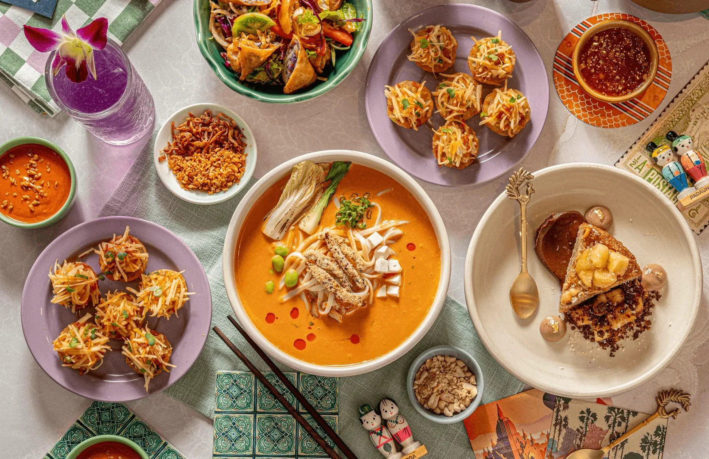
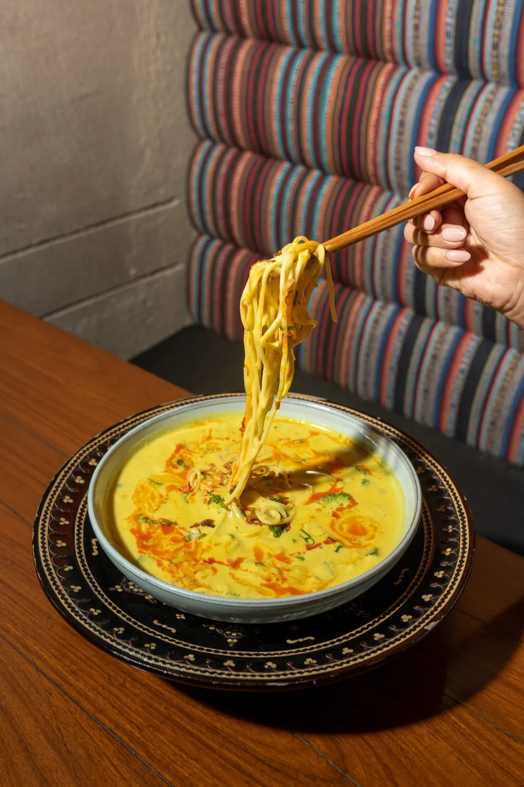

Samosas စမူဆာ (3 pcs)
$7.99
A pastry with a savoury filling of onion, potato and a blend of spices, served with our house sauce.

The menu
Every dish is cooked to order. Vegetarian and gluten-free are marked, and you can filter the whole menu by them.
First time?
A Burmese table is not a starter, a main and a dessert. It is a thoke (a salad, tossed by hand), one or two curries with rice, and something with noodles in the middle — all put down at once and shared across the table.
Tea leaf if it is your first visit. Ginger if you like sharp things.
Pick your rice: coconut with pork, lentil with chicken, paratha with anything.
Moh hinga if you want the real thing. Coconut noodle soup if you want to be comforted.
226 W Front St, Wheaton IL 60187 · (630) 868-3303 · burmaoclock.com
In Burma these are street food — eaten standing up, between other things.
$7.99
A pastry with a savoury filling of onion, potato and a blend of spices, served with our house sauce.
Vegetarian
$7.99
Crisp fried wrappers with a flavourful filling, served with our house sauce.
Vegetarian
$17.99
Akyaw sone — battered and deep-fried assorted vegetables, served with a sweet-and-sour tamarind sauce. Built for a table, not a person.
VegetarianTo share
$7.99
Aloo htaung — savoury Burmese-style mashed potato mixed through with chili and crisp garlic oil.
Vegetarian
$7.99
Shan tofu, made from chickpea flour rather than soy — a crisp crust and a soft, almost custardy inside. Served with a savoury house sauce.
Vegetarian
$7.99
Imitation crab, premium cream cheese and celery wrapped in a crisp wonton wrapper.
Thoke means “to mix”. Every one of these is tossed by hand to order — which is why they take a minute.
$15.99
The staple every Burmese household eats: fermented tea leaves tossed with a crisp mixture of nuts, beans and lettuce. If you order one thing here, order this.
House signatureVegetarianGluten-free
$15.99
Pickled ginger tossed with lettuce, cabbage, crisp garlic, sesame seeds and peanuts. Sharper and cleaner than the tea leaf.
VegetarianGluten-free
$13.99
Blanched watercress, fresh tomato, onion, roasted peanut, chickpea flour and crisp shallot with a lime dressing.
VegetarianGluten-free
$15.99
Myin kwa ywet thoke — fresh pennywort leaf, tomato, onion, roasted peanut, chickpea flour and crisp shallot with lime dressing. Grassy, cooling, and hard to find anywhere else in Illinois.
$10.99
A savoury mixture of crisp eggrolls, cabbage and tamarind dressing.
Vegetarian
$16.99
Firm, springy fish cakes combined with fresh vegetables.
$13.99
A savoury mixture of yellow Shan tofu, cabbage and tamarind dressing.
Vegetarian
A Burmese noodle bowl arrives dry or wet, and the crisp things always go on last.
$17.99
Nan gyi thoke — chewy thick rice noodles in a tangy coconut chicken sauce with chickpea powder, cilantro and onion, topped with hard boiled egg and crisp noodles.
$17.99
Rice noodle in a tomato chili bean sauce with minced chicken, ground peanut, sesame seed and pickled mustard greens. From the hills of Shan State.
Tofu on request
$17.99
Egg noodle under a coconut chicken sauce, garnished with boiled egg, shallot, cilantro, crunchy fried noodle, chickpea powder, chili flakes and lime.
$16.99
Flat noodles with minced chicken and our house garlic oil, topped with fried garlic flakes and scallion. The plainest thing on the menu and the hardest to stop eating.
Tofu on request
$16.99
Ohn no khao swè — egg noodles with chicken curry in a creamy coconut broth, topped with crisp noodles, hard boiled egg and scallion.
$16.99
Moh hinga — traditional thin rice noodles in a fish chowder broth, served with hard boiled egg, fried yellow peas and cilantro. Burma's national dish, and a breakfast where it comes from.
House signature
Every curry comes with your choice of rice: jasmine, coconut, lentil — or paratha instead.
$18.99
A Burmese red curry: bold but balanced, tender chicken in a sauce built from ginger, garlic, onion and turmeric, cooked down until the oil separates.
$18.99
Yoghurt-marinated chicken with bell pepper, mint leaf and sliced onion. Lighter and more aromatic than the curries.
$20.99
Hearty cuts of beef taken slowly with aromatic spices.
$18.99
The signature red pork curry of Burma O'Clock — tender pork simmered in a rich, deeply flavoured sauce. If you are here to understand Burmese cooking, this is the dish.
House signature
$20.99
Tender shrimp in a richly spiced curry sauce.
$16.99
Hearty and comforting, made with a mixture of vegetables, aromatic spices and coconut milk.
Vegetarian
$18.99
Our red curry cooked with pickled mango — sour, sweet and rich all at once. A Burmese cook's trick for cutting through fat.
$20.99
Chunks of butternut squash and shrimp cooked to the point where the squash starts to give.
One curry, one rice, one salad — that is a Burmese meal.
$4
VegetarianGluten-free
$4
VegetarianGluten-free
$3
VegetarianGluten-free
$4
Flaky, layered flatbread — the thing to order if you want to eat curry with your hands.
Vegetarian
Burmese tea is strong, sweet and served small. It is meant to slow you down.
$6
Lightly sweetened black grass jelly from the mesona plant. Cooling, faintly herbal, and the thing to drink after something spicy.
VegetarianGluten-free
$6
The tea shop standard — strong black tea cut with condensed and evaporated milk, poured over ice.
VegetarianGluten-free
$3
Free-flowing in Burma, and bottomless here too.
VegetarianGluten-free
$3
VegetarianGluten-free
$3
VegetarianGluten-free
Burmese sweets are sticky, coconut-heavy and not very sweet at all — except the falooda, which is all of it at once.
$7.99
Ripe mango with rich, creamy coconut sticky rice.
VegetarianGluten-free
$7.99
Thar kway yine — sweetened glutinous rice, chewy and soft, served with coconut milk.
VegetarianGluten-free
$7.99
Made with very ripe bananas, and sweet only because of them.
Vegetarian
$12.99
A cold glass dessert of milk, rose syrup, basil seed, jelly, pudding and ice cream. Burma's inheritance from the Indian traders of Rangoon, and completely absurd in the best way.
Vegetarian
No dishes match that. Try clearing a filter.
Menu and prices as published by Burma O'Clock; please call to confirm before ordering. Dishes marked vegetarian contain no meat — tell us about allergies when you order, as several Burmese dishes are built on shrimp paste or fish sauce.

Carryout any time we're open, and delivery by our own drivers — no fee, $15 minimum.